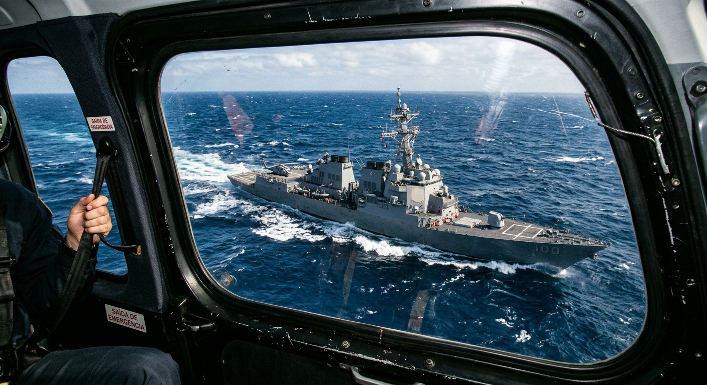

Primeiro post
autor: erick gustavo
🌐 Visão Geral da Classe: As Corvetas No início da sua jornada nos mares de Modern Warships, as corvetas são suas maiores aliadas. Caracterizadas por sua alta mobilidade e versatilidade, essas embarcações leves são ideais para capitães que estão aprendendo a dominar o posicionamento estratégico e a mira no campo de batalha. ⚓ Características Principais Agilidade Máxima: Por terem cascos menores, as corvetas possuem excelente velocidade e capacidade de manobra. São perfeitas para flanquear o inimigo e desviar de disparos de longo alcance. Poder de Fogo Inicial: Embora não possuam a blindagem pesada dos cruzadores, contam com uma seleção equilibrada de canhões rápidos, mísseis leves e metralhadoras automáticas para combates dinâmicos a curta e média distância. Foco em Aprendizado: Com menos sistemas complexos para gerenciar, jogar de corveta permite ao almirante focar no básico: leitura de mapa, uso de coberturas e gerenciamento de recarga de armas. 📋 Destaques do Arsenal (Tier 1) O manual analisa o desempenho dos principais modelos disponíveis: USS Fort Worth (LCS-3): Uma escolha equilibrada e veloz, ideal para táticas de bater e correr. CN Type 022: Focada em ataques rápidos com mísseis, excelente para dano concentrado. HMS Trent (P224) e CN Type 056: Plataformas estáveis com boa cadência de tiro para manter a pressão no adversário. Nota do Almirante: "A velocidade é a sua maior blindagem. Não fique parado em mar aberto; use as ilhas a seu favor e force o inimigo a errar os disparos enquanto você mantém o fogo constante."